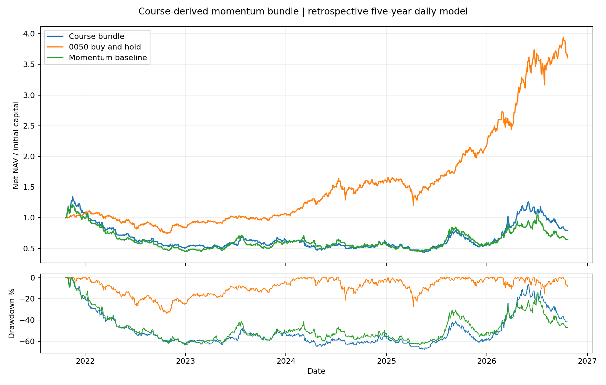

日線多方；期間 2021-10-25～2026-10-22。這是自訂、可重現的研究版本，非作者公式重現。
本版未通過實用性檢驗：五年扣費後虧損，不能據此稱為最佳解。符合更多條件是排序依據，尚未校準成上漲機率。
w1_m80_ma10_breakout；動能權重 [0.6, 0.2, 0.2]（20 日漲幅／20 日均線乖離／成交額相對強度）。固定 5 個持股名額、7% 停損、無槓桿。100 萬為標準化試算本金，並非使用者資金設定。
動能 M = 60% × 20 日報酬百分位 + 20% × MA20 乖離百分位 + 20% × 成交金額相對強度百分位。三項都在當日合格、資料完整且前日成交額超過 5 億的股票中排名，M 介於 0～100；不能對應作者的 7.5 分。
排序分數 = 0.7 × M + 當日投信買超 10 分 + 當日外資買超 10 分 + 量增達前 20 日均量 1.2 倍 10 分。各篩選器取聯集，不按重複上榜次數加分。
選定門檻為 80 分；此門檻用於動能型篩選器，突破邊緣等其他篩選器依其規則納入。所有候選仍須 20 日報酬為正、站上 MA20，且 0050 站上 MA5、MACD 柱狀值增加。
選定進場：只做突破。突破須收盤超過前 40 日最高價、紅 K、量增達 1.2 倍；隔日開盤跳空超過 ±3% 跳過。每筆上限為前日淨值 1/5，不補滿持倉。出場：固定 7% 停損立即生效，或收盤跌破 MA10 後隔日開盤賣出；停損跳空按較差開盤價估算，無法成交則順延。
選參數方式：2021～2023 訓練 24 組，依年化報酬 − 0.5 × 最大回撤絕對值選前 5 組（至少 20 筆平倉）；2024 以扣費報酬選定一組；2025 起測試不參與選擇。較高滑價比較不另選參數。
24 組訓練中扣費獲利者 0 組；5 組驗證中獲利者 0 組。「選定」只是依固定排序挑出比較對象，不表示通過獲利門檻，也不能據此判定作者原策略有效或無效。
| 案例 | 累積報酬 | 年化 | 最大回撤 | 已完成交易 | 勝率 |
|---|---|---|---|---|---|
| 獨立起算驗證段：2025 起 | 39.57% | 20.33% | -37.50% | 202 | 28.22% |
| 五年回溯：選定組合 | -20.67% | -4.53% | -67.64% | 573 | 29.14% |
| 0050 驗證段比較 | 126.33% | 57.37% | -27.48% | 0 | — |
| 0050 五年比較 | 260.68% | 29.31% | -33.96% | 0 | — |
| 固定動能基準：驗證段 | 18.23% | 9.74% | -38.25% | 221 | 26.24% |
| 固定動能基準：五年 | -35.46% | -8.40% | -63.53% | 623 | 28.41% |
| 組合驗證段：滑價提高到每邊 0.3% | 23.11% | 12.23% | -39.60% | 202 | 26.73% |
| 組合五年：滑價提高到每邊 0.3% | -49.88% | -12.92% | -77.19% | 575 | 27.65% |
勝率只計已平倉交易；期末部位按市值扣除預估清算成本，未假裝已成交。

成本假設：買賣手續費每邊 0.1425%（最低 20 元），股票賣出稅 0.3%、0050 賣出稅 0.1%，滑價每邊 0.1%。五年實付手續費與交易稅合計 440,532 元（滑價另內含於成交價），平均年單邊周轉 22.4 倍。0050 期末清算成本為估計，沒有捏造賣出。
| 年度 | 選定組合 | 0050 |
|---|---|---|
| 2021 | 8.70% | 6.73% |
| 2022 | -53.74% | -21.37% |
| 2023 | 28.40% | 27.52% |
| 2024 | -7.02% | 48.64% |
| 2025 | -5.25% | 36.86% |
| 2026 | 39.46% | 65.69% |
2021、2026 為部分年度。年度數字由同一個連續五年帳戶計算。
量大動能、投信剛買準突破、投信動能連買、外資剛大買、外資投信同買、突破邊緣，以及「價量創 400 日新高」的日線改編，共同產生候選。排序按動能、投信、外資、量能分組，重複上榜不重複加分。突破／回檔訊號收盤確認後，下一交易日開盤模型執行。
完整策略規則與重跑方式。動能三個構成參考 CMoney 課程說明，期間、權重及門檻由本研究明確定義。0050 分割停牌依 證交所公告核對。
完整研究結果 · 全部訓練及驗證試驗 · 每日資料覆蓋 · 五年每日淨值 · 五年交易明細 · 驗證段每日淨值 · 驗證段交易明細 · 事前固定規格